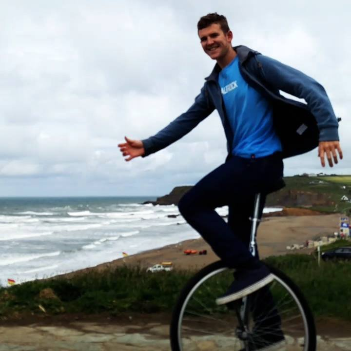

Luke Storry

Maths and Computer Science student
at the University of Bristol.
I'm passionate about programming, kayaking and windsurfing.
Plus a few other things.
Feel free to look at my stuff or contact me through any of the links below:
Facebook
Twitter
LinkedIn
GitHub
Flickr
Instagram
Steam
Email